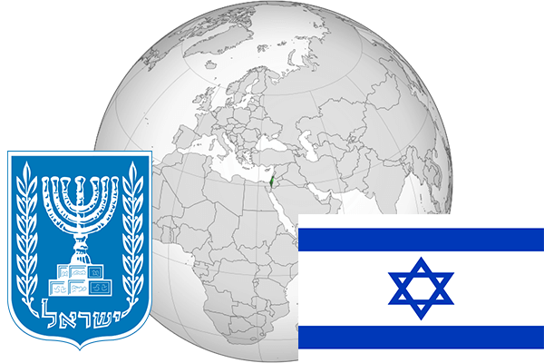

To`liq nomi: Isroil davlati
Region: G`arbiy Osiyo
Qonunchilik shakli: Parlamentar Respublika
Mustaqillik kuni: 14-may 1948-yil (Birlashgan Qirollikdan)
Poytaxt: Ierusalim
Maydoni: 20 770 km² (dunyoda 143(147) -o`rinda )
Chegaradosh davlatlari: Livan, Suriya, Iordaniya, Misr
Aholisi: 8 680 000 (dunyoda 97 - o`rinda, 2016 -yil roʻyxat)
Aholi zichligi: 387 /km²
Aholining o`rtacha yoshi: 79,9 yil (83,3 ayollar, 76,5 erkaklar)
Rasmiy tili: Ivrit va arab tillari
Dini: 82%-iudaizm, 13% islom, 5% xristianlik va boshqalar
Pul birligi: Yangi shekel
Telefon prefiksi: +972
Internet domen: .il
Xalqaro tashkilotlarga a`zoligi: BMT (1949 – yildan)
Dengiz va okeanlarga chiqishi: O`rtayer, Qizil va O`lik dengiz
YIM: Butun: $ 300,416 mlrd, Jon boshiga $ 36 576 (2015 - yil roʻyxati)
Yirik shaharlari: Ierusalim, Tel-Aviv, Yaffe, Xayfa, Beer-Sheva